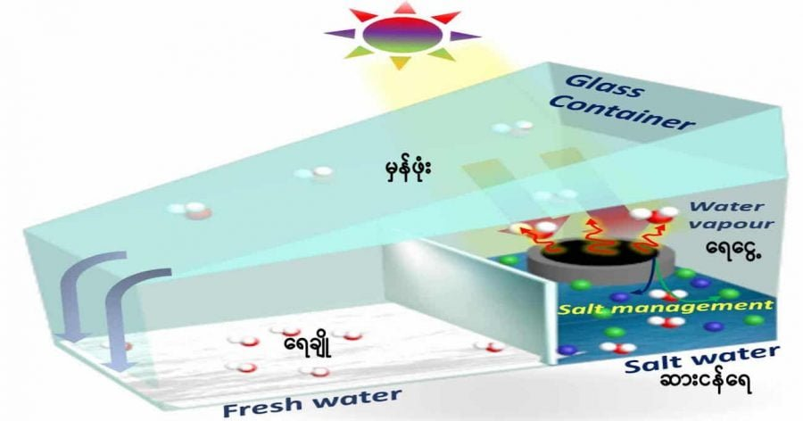

ကမ္ဘာပေါ်မှာ ရှိနေတဲ့ ရေတွေရဲ့ ၉၇ ရာခိုင်နှုန်းလောက်က ပင်လယ်ထဲမှာ ပင်လယ်ရေငန် အနေနဲ့ ရှိနေတာပါ။ ဒီပင်လယ်ရေတွေဟာ ဆာငန်ရေမို့ လူတွေ သောက်သုံးလို့ မရပါဘူး။ ရေရှားပါးတဲ့ အရပ်ဒေသ တွေမှာတော့ ဒီ ပင်လယ်ရေငန်တွေကိုပဲ ရေချိုချက်ပြီး သောက်သုံးကြရပါတယ်။ ဒါပေမယ့် ဒီပင်လယ်ရေငန်ကနေ ရေချိုချက်တာက ကုန်ကျစားရိတ် အရမ်းများလွန်းပါတယ်။
တောင်ကိုရီးယားနိုင်ငံ အူဆန် အမျိုးသား သိပ္ပံနှင့် နည်းပညာ တက္ကသိုလ် (Ulsan National Institute of Science and Technology, UNIST) က အင်ဂျင်နီယာတွေဟာ ဈေးသက်သက်သာသာနဲ့ ပင်လယ်ရေငန်ကနေ ရေချိုထုတ်ပေးနိုင်မယ့် ကိရိယာ တစ်မျိုးကို တီထွင်လိုက်ကြပါတယ်။
ဒီကိရိယာမှာ အဓိကအားဖြင့်တော့ နေရောင်ခြည်ရဲ့ အပူဓါတ် စွမ်းအင်ကို အသုံးချပြီး ပင်လယ်ရေငန်ကနေ ရေချို ထုတ်လုပ်တဲ့ နည်းပဲ ဖြစ်ပါတယ်။ သူ့ရဲ့ အခြေခံကတော့ ပင်လယ်ရေငန်ကို နေရဲ့ အပူချိန်ကို အသုံးပြုပြီး အငွေ့ပျံ စေပါတယ်။ ဒီရလာတဲ့ ရေငွေ့ကို အအေးခံပြီး ငွေ့ရည်ဖွဲ့လို့ ကျလာတဲ့ ရေချိုကို သောက်ရေအဖြစ် အသုံးပြုတဲ့ နည်းလမ်းပဲ ဖြစ်ပါတယ်။
အခု ထုတ်လုပ်လိုက်တဲ့ နေရောင်ခြည် စွမ်းအင်သုံး ရေချိုထုတ်စက်ကို 3D ပရင်တာနဲ့ အလွယ်တကူ ထုတ်လုပ်နိုင်မယ်လို့ ဆိုပါတယ်။ ဒီကိရိယာဟာ နေရောင်ခြည်ကလာတဲ့ အပူစွမ်းအင်ရဲ့ ၈၉% ထိအောင် ဖမ်းယူနိုင်စွမ်းရှိပါတယ်။ ဒီကိရိယာက နေရောင်ခြည်ကို အသုံးပြုပြီး တစ်နာရီကို ရေမျက်နှာပြင် အကျယ် ၁ မီတာ ပတ်လည်ကနေ ရေ ၁.၆ ကီလိုဂရမ် အငွေ့ပျံအောင် ပြုလုပ်ပေးနိုင်မယ်လို့ ဆိုပါတယ်။ (အကြမ်းဖျင်းအားဖြင့် ရေချို ၁.၆ ကီလိုဂရမ်ဟာ ၁.၆ လီတာနဲ့ ညီမျှပါတယ်)။
နေရောင်ခြည်သုံး ရေချိုထုတ်စက်တွေရဲ့ စွမ်းဆောင်ရည်ဟာ အဓိကအားဖြင့် သူ့ရဲ့ ဒီဇိုင်းပေါ် အများကြီး မူတည်နေပါတယ်။ သေချာ ဒီဇိုင်းမထုတ်ထားတဲ့ ရေချိုထုတ်စက်တွေဆိုရင် အပူဆုံးရှုံးမှု များတာတွေ ဆားတွေ ခဲပြီး သုံးမရ ဖြစ်သွားတာမျိုးတွေ ဖြစ်နိုင်ပါတယ်။
UNIST က အင်ဂျင်နီယာတွေက ဒီပြဿနာကို နည်းလမ်း ၂ မျိုးနဲ့ ဖြေရှင်းထားပါတယ်။
(၁) 3D ပရင်တာနဲ့ ပုံသွင်းထုတ်လုပ်ထားတဲ့ ခွက်ကလေးကို ထည့်သွင်းထားပါတယ်။ ဒီခွက်ကလေးရဲ့ အတွင်းမှာ ရောင်ပြန်အား ကောင်းတဲ့ ပစ္စည်းနဲ့ ဖုံးအုပ်ထားပါတယ် (၂ တွင်ကြည့်ရန်)။ ဒီခွက်ရဲ့ ပုံစံကိုလဲ မှန်ဘီလူးပုံစံ ခွက်ခွက်ကလေး ပြုလုပ်ထားတာမို့ ကျရောက်လာတဲ့ နေရောင်ဟာ အတွင်းမှာ အထပ်ထပ် ရောင်ပြန်ဟပ်ပြီး အပူအဖြစ် ပြောင်းလဲသွားပါတယ်။
(၂) ဒီ အပူခံ ခွက်ကလေးရဲ့ အောက်ခြေကို ဖုံးအုပ်ထားတဲ့ ပစ္စည်းက နှစ်လွှာပါတဲ့ ပစ္စည်းနဲ့အုပ်ထားတာပါ။ အောက်ခြေအလွှာကို ဖိုက်ဘာမှန်နဲ့ ပြုလုပ်ထားပြီး အပေါ်လွှာကိုတော့ ကာဘွန်ပိုလီမာနဲ့ အုပ်ထားပါတယ်။ ဒီအောက်ခြေက အလွှာနှစ်ခုက အလင်းပြန်အား ကောင်းစေသလို တချိန်ထဲမှာ ဆားတွေ အနည်ထိုင်ပြီး ကပ်မသွားအောင်လဲ ကာကွယ်ပေးပါတယ်။
UNIST တက္ကသိုလ် စွမ်းအင်နှင့် ဓါတုအင်ဂျင်နီယာဌာန (School of Energy and Chemical Engineering at UNIST) က ပါမောက္ခ ဂျီဟွန်ဂျန်း (Professor Ji-Hyun Jang) က “အခုကျွန်တော်တို့ ထွင်လိုက်တဲ့ နေစွမ်းအားသုံး ရေချိုထုတ်စက်ဟာ ဈေးသက်သက်သာသာနဲ့ စိတ်ချရတဲ့ ရေချို ချက်ပေးနိုင်မှာ ဖြစ်ပါတယ်။ နောက်ပြီး တာရှည်လဲ ခံမှာ ဖြစ်ပါတယ်” လို့ မှတ်ချက်ပေးပါတယ်။
Reference: UNIST Unveils High-Performance, 3D-Printed Solar Evaporator for Desalination | UNIST
ပင်လယ်ရေငန်ကနေ ဈေးသက်သက်သာသာနဲ့ သောက်ရေသန့်ထုတ်နိုင်မယ့်စက်

October 9, 2021
Other Posts
- မားစ်ဂြိုဟ်ရဲ့ အရုဏ်တက်နှင့် ဆည်းဆာချိန်
- တင့်ကားဖျက် ဒုံးကျည် ဘယ်လို အလုပ်လုပ်လဲ
- ဥက္ကာပျံတွေကို အဏုမြူဗုံးနဲ့ လမ်းလွှဲမယ်
- တစ်နေ့နှစ်ကြိမ် ဘာ့ကြောင့် ပင်လယ်ဒီရေ တက်ရတာလဲ
- တရုတ်ရဲ့ ရှင်းတျန်း တယ်လီစကုပ်ဟာ အမေရိကန်ရဲ့ ဂျိမ်းစ်ဝက်ဘ် ကို ယှဉ်နိုင်မလား
- ဟယ်လီ ကော်ပတာ ဘယ်လို ပျံသလဲ
- ဆလိုဗက် နိုင်ငံထုတ် ၁၅၅မမ Zuzana 2 ယာဉ်တင် ဟောင်ဝစ်ဇာ
- အလင်းနှစ် ဆိုတာ ဘာလဲ
- ကမ္ဘာ့သမိုင်း၏ အဆိုးရွားဆုံး မျိုးတုန်းမှုကြီး
- လူတစ်ယောက် လိမ်တယ် မလိမ်ဘူးဆိုတာ ဘယ်လိုသိနိုင်မလဲ